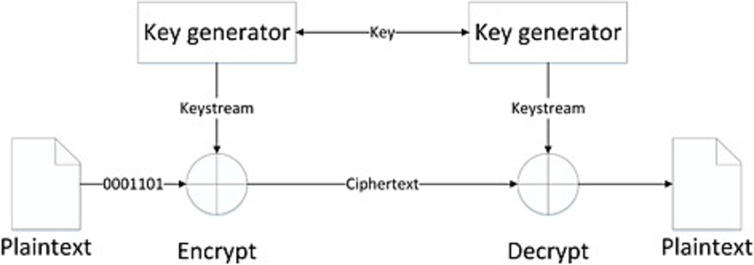

Symmetric Key
It's an encryption method where message sender and receiver use a single universal key for encrypting and decrypting messages. Symmetric key systems are faster and easier, but the issue is that sender and receiver must exchange key securely in some way.
Symmertic Encryption, has two types:
- Stream Cipher: is where the plaintext data input is converted into binary (ones and zeros) is combined with the keystream, which is also in binary format. each digit from the plain text data input is encrypted alone with the corresponding digit from the keystream, to get a digit form the encrypted output (cipher), and as per the encryption of each digit does not depend on any other digit, so the decryption will be the same, each cipher digit will be decrypted alone with corresponing keystream digit. The combination method is a methimatical operation (XOR). Stream Cipher is not used as much as block cipher in modern cryptography. The Keystream is generated based on the key, which is used for the encryption.

- Block Cipher: is the same like stream cipher, as it uses the same key for encryption and decryption, but rather than working on bit by bit, it splits the plaintext or Cipher into blocks of data with same size, and work on blocks.